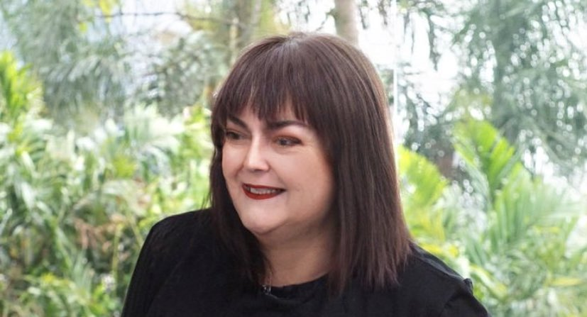

FOFOCAS
Foi descorberto uma irmã do Fausto Silva, que é professora e
recentemente foi no programa Mais você
e conversou com a Ana Maria.
Falou que sempre achou que era parecida com ele mas nunca imaginou que
seria sua irmã, depois
muita perguntar ela foi pesquisar sobre sua
história.
